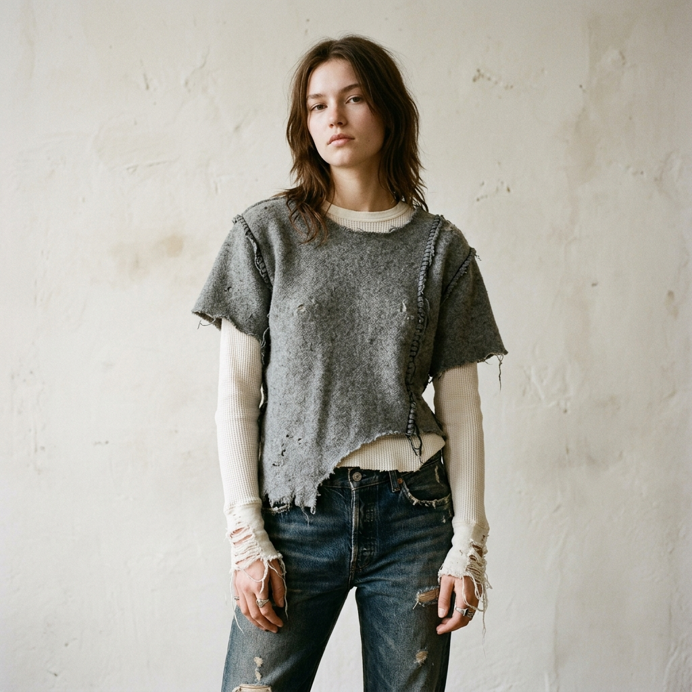
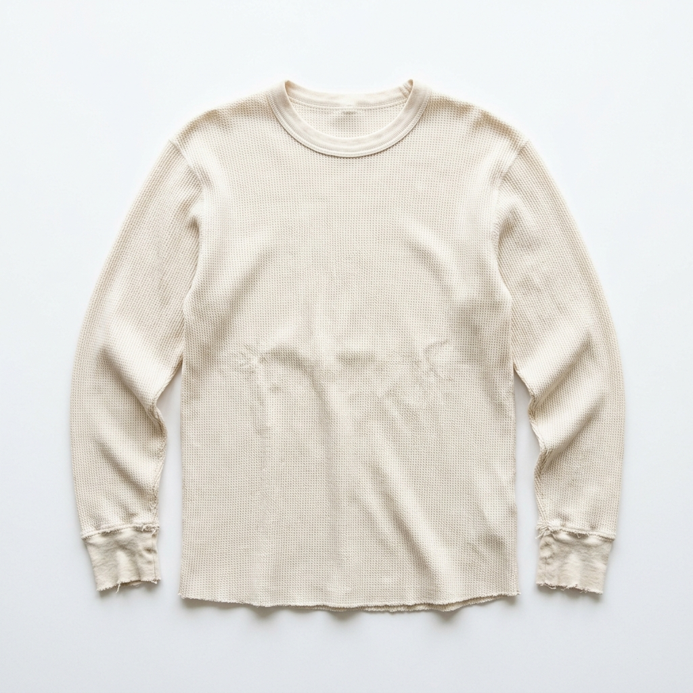
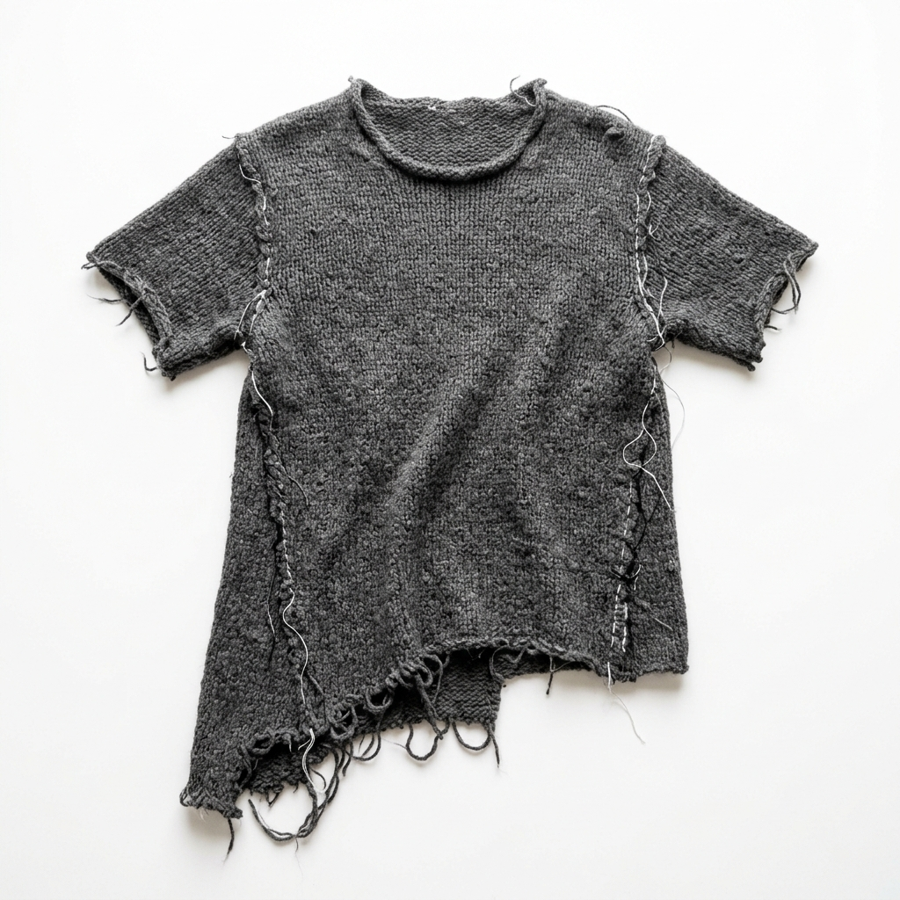
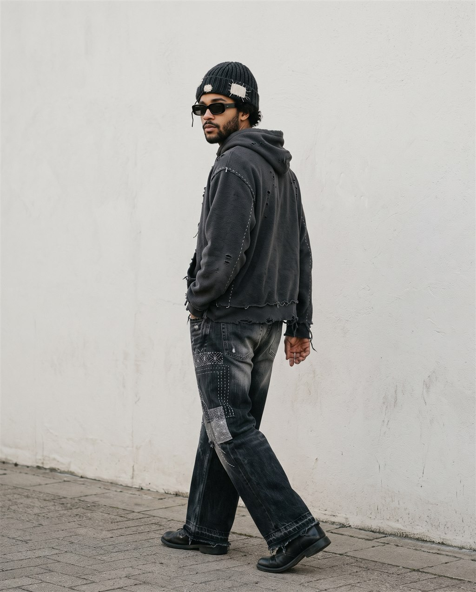
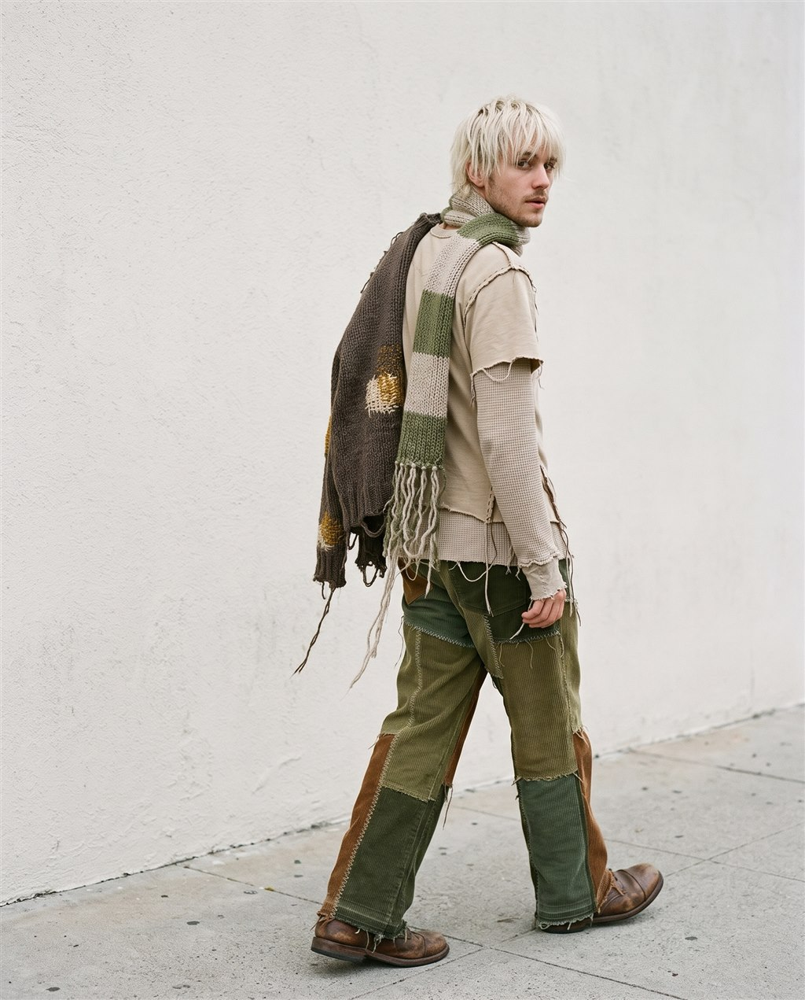

SYS.BRAND // ATELIER — NODE 07
SYSWear
SYS.TIME // LOCAL
00:00:00
----
IMPERFECTBYDESIGN.
COLLECTION 004 // "THERMAL MEMORY". Hand-finished wool layered permanently over organic thermal. No two hems unravel the same way.
ACCESS INDEX ▸
LOOK_01 / RAW-EDGE LAYER SYSTEM
● LIVE FEED // CLICK TO ZOOM
● LIVE FEED // CLICK TO ZOOM
2.5×
✳ RAW EDGES ARE NOT DEFECTS ✳ HAND-UNRAVELED HEMS ✳ EXPOSED STITCH ARCHITECTURE ✳ 100% ORGANIC FIBER ✳ SHIPS WORLDWIDE ✳ RAW EDGES ARE NOT DEFECTS ✳ HAND-UNRAVELED HEMS ✳ EXPOSED STITCH ARCHITECTURE ✳ 100% ORGANIC FIBER ✳ SHIPS WORLDWIDE ✳
[01]
INDEX06
Every garment is logged with a serial. Imperfections are catalogued, not corrected.
[02]
ANATOMYOF ALAYER.
SKU // 099-COTTON-WOOL — "TWO-IN-ONE DECONSTRUCTED TEE". Drag the separation slider to pull the layers apart.
| OUTER | Raw-edge merino wool knit, 240gsm |
| INNER | Organic cotton waffle thermal |
| BOND | Exposed hand-stitch, 48 pts |
| HEM | Unraveled, asymmetric −3.2cm |


01 — RAW EDGE WOOL KNIT
02 — EXPOSED STITCH BOND
03 — INNER THERMAL BASE LAYER
04 — UNRAVELED HEM / NO TWO ALIKE
[03]
STYLING
Light is not always light, and dark is not always dark. Every fit carries a little of its opposite.

Ying

Yang
&&
We built a machine of perfect pixels to sell you something beautifully unfinished.
0HAND STITCHES / UNIT
0PIECES IN COLLECTION 004
0%ORGANIC FIBER
What, you liked the animations so much you wanna see 'em again?